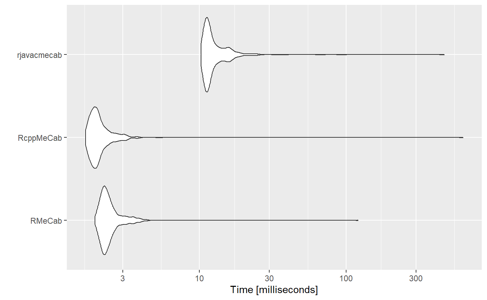

str <- "キャピキャピ音が高くなってきたら、ほんとに出してくれの合図です！ しっかりここではコミュニケーションとってください"
str_utf8 <- stringi::stri_enc_toutf8(str)
tm <- microbenchmark::microbenchmark(
RMeCab = RMeCabC(str),
RcppMeCab = pos(str_utf8), ## MeCabの辞書はUTF-8でコンパイルしています
rjavacmecab = cmecab(str),
times = 500L,
setup = (function() {
require(RMeCab)
require(RcppMeCab)
require(rjavacmecab)
})()
)
#> 要求されたパッケージ RMeCab をロード中です
#> 要求されたパッケージ RcppMeCab をロード中です
#> 要求されたパッケージ rjavacmecab をロード中です
summary(tm)
#> expr min lq mean median uq max neval
#> 1 RMeCab 1.7787 2.09820 2.570915 2.24305 2.44330 122.2976 500
#> 2 RcppMeCab 1.6475 1.86755 3.223366 2.02290 2.22615 554.7955 500
#> 3 rjavacmecab 9.0427 9.89775 12.039809 10.62475 12.67615 113.5883 500ggplot2::autoplot(tm)
#> Coordinate system already present. Adding new coordinate system, which will replace the existing one.
sessioninfo::session_info()
#> - Session info ---------------------------------------------------------------
#> setting value
#> version R version 4.0.3 (2020-10-10)
#> os Windows 10 x64
#> system x86_64, mingw32
#> ui RTerm
#> language (EN)
#> collate Japanese_Japan.932
#> ctype Japanese_Japan.932
#> tz Asia/Tokyo
#> date 2021-01-14
#>
#> - Packages -------------------------------------------------------------------
#> ! package * version date lib source
#> assertthat 0.2.1 2019-03-21 [2] CRAN (R 4.0.2)
#> backports 1.2.1 2020-12-09 [2] CRAN (R 4.0.3)
#> cli 2.2.0 2020-11-20 [2] CRAN (R 4.0.3)
#> codetools 0.2-16 2018-12-24 [3] CRAN (R 4.0.3)
#> colorspace 2.0-0 2020-11-11 [2] CRAN (R 4.0.3)
#> crayon 1.3.4 2017-09-16 [2] CRAN (R 4.0.2)
#> desc 1.2.0 2018-05-01 [2] CRAN (R 4.0.2)
#> digest 0.6.27 2020-10-24 [2] CRAN (R 4.0.3)
#> dplyr 1.0.2 2020-08-18 [2] CRAN (R 4.0.2)
#> ellipsis 0.3.1 2020-05-15 [2] CRAN (R 4.0.2)
#> evaluate 0.14 2019-05-28 [2] CRAN (R 4.0.2)
#> fansi 0.4.1 2020-01-08 [2] CRAN (R 4.0.2)
#> farver 2.0.3 2020-01-16 [2] CRAN (R 4.0.2)
#> fs 1.5.0 2020-07-31 [2] CRAN (R 4.0.2)
#> furrr 0.2.1 2020-10-21 [2] CRAN (R 4.0.2)
#> future 1.21.0 2020-12-10 [2] CRAN (R 4.0.3)
#> generics 0.1.0 2020-10-31 [2] CRAN (R 4.0.3)
#> ggplot2 * 3.3.3 2020-12-30 [2] CRAN (R 4.0.3)
#> globals 0.14.0 2020-11-22 [2] CRAN (R 4.0.3)
#> glue 1.4.2 2020-08-27 [2] CRAN (R 4.0.2)
#> gtable 0.3.0 2019-03-25 [2] CRAN (R 4.0.2)
#> hms 1.0.0 2021-01-13 [2] CRAN (R 4.0.3)
#> htmltools 0.5.1 2021-01-12 [2] CRAN (R 4.0.3)
#> knitr 1.30 2020-09-22 [2] CRAN (R 4.0.2)
#> lifecycle 0.2.0 2020-03-06 [2] CRAN (R 4.0.2)
#> listenv 0.8.0 2019-12-05 [2] CRAN (R 4.0.2)
#> magrittr 2.0.1 2020-11-17 [2] CRAN (R 4.0.3)
#> MASS 7.3-53 2020-09-09 [3] CRAN (R 4.0.3)
#> memoise 1.1.0 2017-04-21 [2] CRAN (R 4.0.2)
#> microbenchmark * 1.4-7 2019-09-24 [2] CRAN (R 4.0.2)
#> munsell 0.5.0 2018-06-12 [2] CRAN (R 4.0.2)
#> parallelly 1.23.0 2021-01-04 [2] CRAN (R 4.0.3)
#> pillar 1.4.7 2020-11-20 [2] CRAN (R 4.0.3)
#> pkgconfig 2.0.3 2019-09-22 [2] CRAN (R 4.0.2)
#> pkgdown 1.4.1 2020-09-23 [2] Github (r-lib/pkgdown@cdd8340)
#> purrr 0.3.4 2020-04-17 [2] CRAN (R 4.0.2)
#> R.cache 0.14.0 2019-12-06 [2] CRAN (R 4.0.2)
#> R.methodsS3 1.8.1 2020-08-26 [2] CRAN (R 4.0.2)
#> R.oo 1.24.0 2020-08-26 [2] CRAN (R 4.0.2)
#> R.utils 2.10.1 2020-08-26 [2] CRAN (R 4.0.2)
#> R6 2.5.0 2020-10-28 [2] CRAN (R 4.0.3)
#> Rcpp 1.0.5 2020-07-06 [2] CRAN (R 4.0.2)
#> RcppMeCab * 0.0.1.3-2 2021-01-12 [2] local
#> D RcppParallel 5.0.2 2020-06-24 [2] CRAN (R 4.0.2)
#> readr 1.4.0 2020-10-05 [2] CRAN (R 4.0.3)
#> D rJava 0.9-13 2020-07-06 [2] CRAN (R 4.0.2)
#> rjavacmecab * 0.1.8 2021-01-14 [2] local
#> rlang 0.4.10 2020-12-30 [2] CRAN (R 4.0.3)
#> rmarkdown 2.6 2020-12-14 [2] CRAN (R 4.0.3)
#> RMeCab * 1.05 2020-04-28 [2] local
#> rprojroot 2.0.2 2020-11-15 [2] CRAN (R 4.0.3)
#> rstudioapi 0.13 2020-11-12 [2] CRAN (R 4.0.3)
#> scales 1.1.1 2020-05-11 [2] CRAN (R 4.0.2)
#> sessioninfo 1.1.1 2018-11-05 [2] CRAN (R 4.0.2)
#> stringi * 1.5.3 2020-09-09 [2] CRAN (R 4.0.2)
#> stringr 1.4.0 2019-02-10 [2] CRAN (R 4.0.2)
#> styler 1.3.2 2020-02-23 [2] CRAN (R 4.0.2)
#> tibble 3.0.4 2020-10-12 [2] CRAN (R 4.0.3)
#> tidyr 1.1.2 2020-08-27 [2] CRAN (R 4.0.2)
#> tidyselect 1.1.0 2020-05-11 [2] CRAN (R 4.0.2)
#> vctrs 0.3.6 2020-12-17 [2] CRAN (R 4.0.3)
#> withr 2.3.0 2020-09-22 [2] CRAN (R 4.0.2)
#> xfun 0.20 2021-01-06 [2] CRAN (R 4.0.3)
#> yaml 2.2.1 2020-02-01 [2] CRAN (R 4.0.0)
#>
#> [1] C:/Users/user/AppData/Local/Temp/RtmpuIK3P6/temp_libpathff81e6e648b
#> [2] C:/Users/user/Documents/R/win-library/4.0
#> [3] C:/Program Files/R/R-4.0.3/library
#>
#> D -- DLL MD5 mismatch, broken installation.